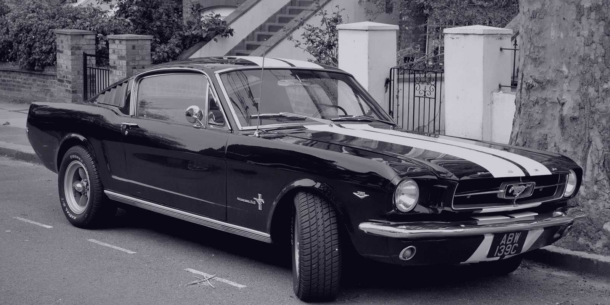

Без покраски
Металл правится изнутри панели. Краска, лак и заводская геометрия не страдают.
Правим металл изнутри панели — без шпатлёвки, грунта и подбора краски. Заводское лакокрасочное покрытие остаётся на месте.

Не стоит торопиться с покраской автомобиля — многие вмятины можно устранить без повреждения краски, что позволит сэкономить ваше время и средства. Для клиентов предоставляется бесплатная услуга такси по городу.
Металл правится изнутри панели. Краска, лак и заводская геометрия не страдают.
Большинство вмятин убирается за один визит — без недель ожидания и перекраски.
Развезём по городу, пока машина в работе — это входит в стоимость.
Родное ЛКП на месте — автомобиль дороже при продаже, без следов ремонта.
PDR (Paintless Dent Repair) — технология, при которой мастер специальными инструментами аккуратно выдавливает металл изнутри панели, возвращая ему заводскую форму. Лакокрасочное покрытие не повреждается: не нужны шпатлёвка, грунт и подбор цвета. Технологию применяют производители и дилеры по всему миру.
Основное направление — выпрямление вмятин без покраски. Заодно приводим в порядок мелкие повреждения лакокрасочного покрытия.
Вмятины на крыльях, дверях, капоте и крышке багажника — по технологии PDR, без покраски и шпатлёвки.
Точечные сколы от камней: убираем незаметно, чтобы под краской не началась коррозия.
Полировка и локальный ремонт: следы веток, ключей и парковочных касаний.
Следы чужой краски после парковки — аккуратно снимаем и возвращаем панели блеск.

Прошёл курс обучения и успешно сдал экзамен по технологии удаления вмятин без покраски PDR (Paintless Dent Repair), разработанной инженерами Mercedes-Benz. Работаю с вмятинами 10 лет.
К каждому автомобилю отношусь как к своему: сначала — бесплатный осмотр и честная оценка, и только потом работа. По фото видно не всё: глубину вмятины, состояние лака и доступ к панели оцениваю только вживую.
Каждая пара — один кадр: слева до, справа после. Нажмите, чтобы открыть крупно.


Оценка по фото — только ориентир. На снимке не видно микродеталей: реальной глубины вмятины, состояния лака, рёбер жёсткости и доступа к панели. Поэтому цена по фото может отличаться в разы — точную стоимость и способ ремонта называю после осмотра. Осмотр бесплатный.
Больше работ на АвитоВсе прошло на ура. Сделали вмятину как и не было её там никогда. Однозначно рекомендую.
Работа выполнена хорошо. Не ждал идеала, но и плохо не назовёшь. Всё что беспокоило в авто — Андрей исправил.
Мастер своего дела, рекомендую
Осмотр бесплатный. Точную цену и способ ремонта называю на месте — по фото видно не всё.
Мы находимся рядом с заправкой Teboil. Там проходят встречи с клиентами для осмотра или комфортного сопровождения в бокс. Для записи и по любым вопросам звоните: +7 997 363 70 24.
Керамическая ул., 3с7 — рядом с заправкой Teboil